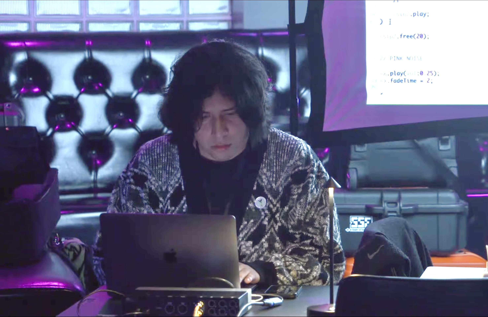
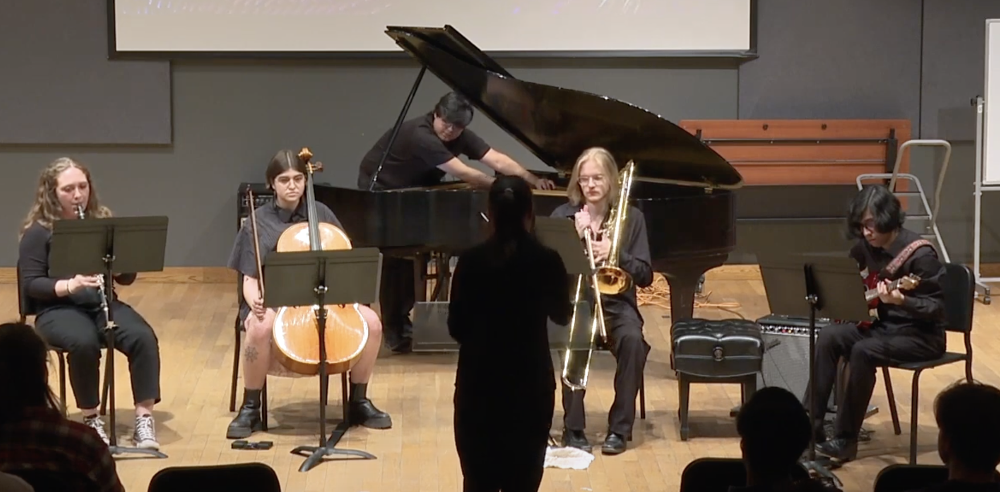
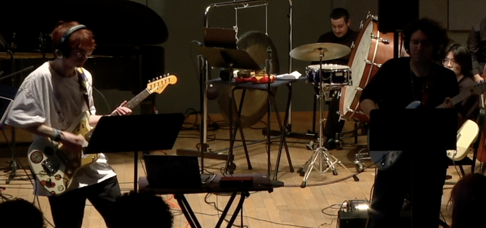
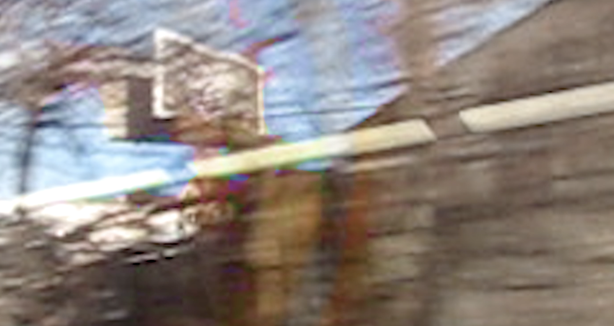
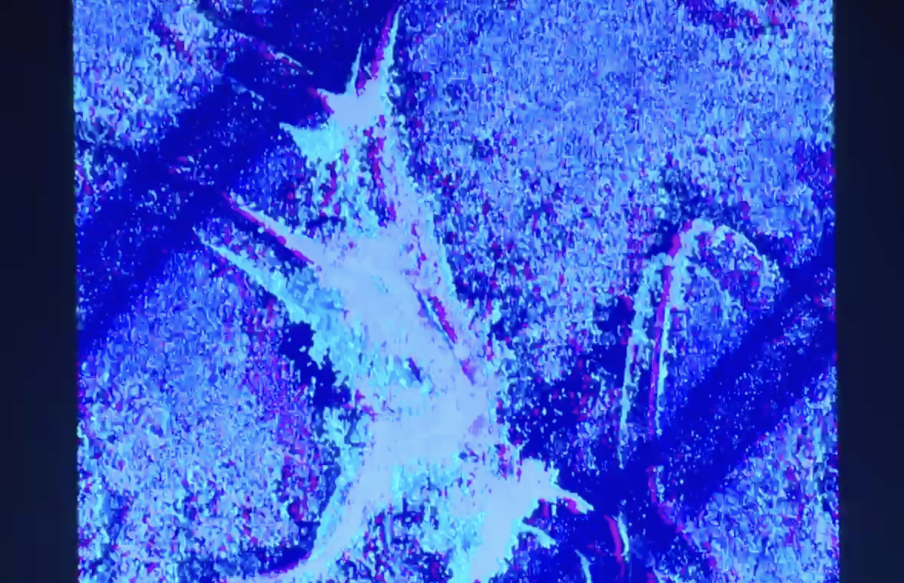
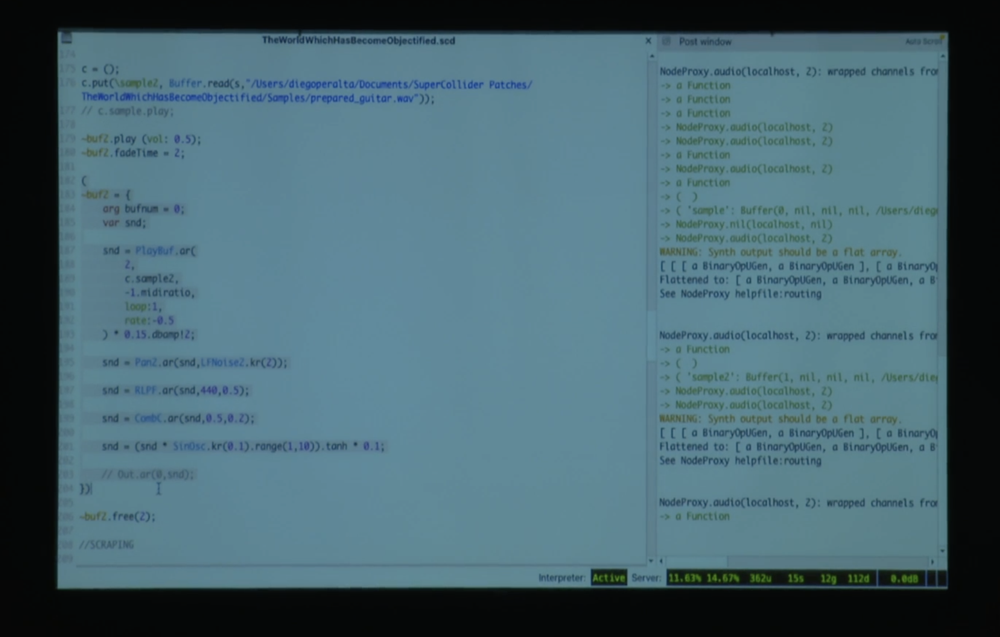
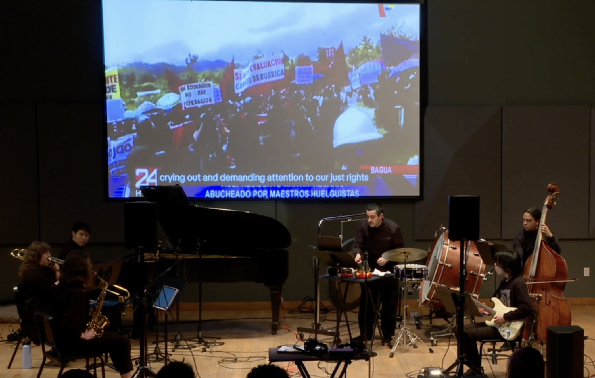
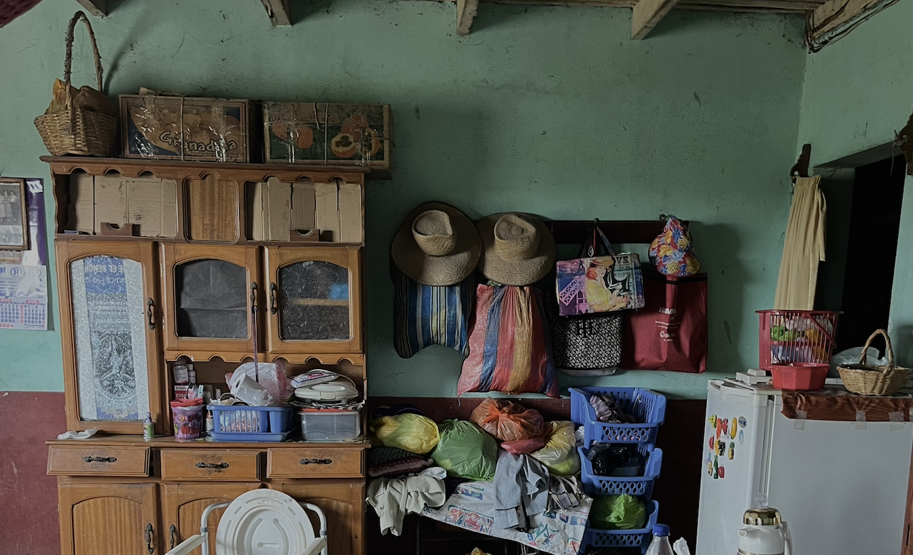

about
If CVs are your thing, here is mine.
Diego Peralta-Gonzales (he/they) (b. 2000) is a Peruvian composer and sound artist whose work engages with the intersection of sonic materiality, technological mediation, and cultural memory. Deeply informed by both experimental aesthetics and critical theory, his practice investigates how sound can articulate non-linear temporalities, cultural legacies, and complex perceptual frameworks. His current compositional interests center on sonic counter-memory, procedural opacity, and the construction of spatial and temporal conditions in which archival fragments, technological systems, and collective agency become sites of tension, instability, and critical reactivation. Since 2021, he has pursued studies in composition at The Boston Conservatory at Berklee, receiving lessons from Timothy (Ti) McCormack, Victoria Cheah, Mischa Salkind-Pearl, Marti Epstein, and Dan VanHassel.
Aesthetically, his work is characterized by slowness and atmospheric density—favoring durational expanses, microtonal inflection, and noise-based textures that operate outside conventional formal hierarchies. These sonic strategies foreground the subtle and often overlooked aspects of sound, destabilizing normative listening modes. His attention to texture and temporal ambiguity reflects a broader critical engagement with listening as an embodied and politicized act, positioning music not merely as a sonic art form, but as a site of reflection, resistance, and transformation. As a performer of ambient and noise-oriented music, he extends his compositional strategies into live performance contexts, utilizing feedback systems, analog processing, and spatial diffusion to explore emergent sonic behaviors and expanded modes of perception.
Peralta-Gonzales's artistic research also engages critically with questions of heritage, epistemology, and cultural memory. Drawing upon Andean cosmologies, histories of resistance, and the sonic memory of place, he approaches these materials not as fixed signifiers of identity, but as dynamic agents in a broader compositional discourse. Rather than treating cultural sources as exoticized or aestheticized referents, he incorporates them through historically situated and contextually rigorous methodologies. In this way, his work aligns itself with broader conversations in postcolonial and decolonial theory, foregrounding complexity, nuance, and critical reflexivity. Sound becomes a medium through which erased or marginalized epistemologies can be rearticulated and reimagined within contemporary experimental practice.
His work is inherently interdisciplinary, often blurring the lines between composition, sound installation, and audiovisual art. Recent projects incorporate video, generative visual systems, and custom media environments, expanding the temporal and perceptual scope of his compositions. He frequently works with tools such as SuperCollider, Max/MSP, and bespoke analog-digital hybrids, not only for synthesis or processing, but as compositional systems in their own right—frameworks that allow for emergent behaviors, nonlinear forms, and collaborative responsiveness.
Peralta-Gonzales has presented his work at internationally recognized platforms including the 2025 International Computer Music Conference, SPLICE Festival V, the Divergent Studio at Longy School of Music, and the 2023 Summer Institute for Contemporary Performance Practice (SICPP). He has participated in workshops with renowned sound artists, including Daniel Neumann and Michael Schumacher, expanding his engagement with spatial audio, acoustics, and the phenomenology of sound installation. His recent interdisciplinary collaborations include projects with MassArt and the Berklee Interdisciplinary Arts Institute, focusing on audiovisual abstraction and performative media systems that challenge conventional forms of presentation.
He has composed works for a range of contemporary ensembles and performers, including Splinter Reeds, the Momenta Quartet, Adrian Morejon, the Divergent Quartet, and pianist Yundi Xu. As a former member of the Comunidad Peruana de Música Nueva (CPMN), Diego is interested in contributing to the critical dissemination and development of experimental and contemporary music practices in Peru and the broader Latin American region. His work aims to cultivate sonic practices that engage with situated knowledges and intersecting cultural-historical narratives.
instrumental
- Un cuerpo en reposo permanecerá en reposo for bassoon and string quartet (2024)
- alone – among mirrors – fenced in by reflections for orchestra (2024)
- you make the floods seem still for clarinet, electric guitar, trombone, cello and piano (2023)
- brooding for solo baritone (2023)
- Abstracción I: angustia for reed quintet (2022)
- Eternity for solo viola (2021)
electroacoustic
- Hidden Layers: who decides when we're entangled for laptop ensemble (2025)
- Subterráááááneo [Subterranean] for two electric guitars (2025)
- Retama for trombone and electronics (2025)
- atoms_of_yours_to_make_you_appear for three performers and miniTidal (2024)
- soliloquy for amplified piano in quadraphonic setup (2023)
- little flower (harawi) for seven performers (2023)
fixed media
multichannel
live coding
intermedia
contact
thank you for visiting my website! i hope you found something that resonates with you.
if you have any questions, or if you're interested in performing one of my works, feel free to get in touch. you can reach me at daperaltagonzales@gmail.com.
you can also follow me on instagram for updates on new works, live performances, and informal sound experiments I share along the way.
Un cuerpo en reposo permanecerá en reposo [A body at rest will remain at rest] (2024)
for bassoon and string quartet
Duration: c. 9' 30"
Written for: The Momenta Quartet and Adrian Morejon.
Program notes:
a body at rest will remain at rest unless it is acted upon by an external force.
alone – among mirrors – fenced in by reflections (2024)
for orchestra
Duration: c. 10'
Performed by: Boston Conservatory at Berklee Composer's Orchestra
Program notes:
“And this I dreamt, and this I dream,
And some time this I will dream again,
And all will be repeated, all be reembodied,
You will dream everything I have seen in dream.
To one side from ourselves, to one side from the world
Wave follows wave to break on the shore,
On each wave is a star, a person, a bird,
Dreams, reality, death – on wave after wave.
No need for a date: I was, I am, and I will be,
Life is a wonder of wonders, and to wonder
I dedicate myself, on my knees, like an orphan,
Alone – among mirrors – fenced in by reflections:
Cities and seas, iridescent, intensified.
A mother in tears takes a child on her lap.”
— Arseny Tarkovsky
you make the floods seem still (2023)
for clarinet, electric guitar, trombone, cello and piano
Duration: c. 14'
Performed by:
- Alainna Pack – clarinet in B♭
- Diego Peralta-Gonzales – electric guitar
- Derek Putnam – trombone
- Olivia Katz – cello
- Ian Medina – piano
Program notes:
you make the floods seem still engages the paradox of perceptual stillness within a field of latent instability. The work does not depict tranquility, but constructs a condition in which the experience of time is stretched, suspended, and momentarily decoupled from its usual functions. Stillness becomes less an affect of peace than a conceptual threshold—a way of listening that detaches sonic material from narrative causality and recasts it as an unstable, unfolding presence.
Within this framework, sound is not expressive in a conventional sense; it is contingent, emergent, and situational. The temporal architecture of the piece resists teleological development, favoring instead durational stasis punctuated by rupture. Time is rendered porous, not as an ambient backdrop, but as a perceptual field where micro-events accumulate and dissolve. Listening becomes a recursive act, one in which perception falters, reframes, and restarts—not to reveal a hidden structure, but to inhabit indeterminacy itself.
The title—posed as a statement yet resonating as a question—points to a deeper epistemological concern: how perception mediates the boundary between experience and illusion. The floods do not stop; they appear still. This misrecognition is not a failure but a mode of insight, one that foregrounds the role of listening as both fallible and generative. In this sense, the work positions itself not as an object of interpretation, but as a condition through which the instability of presence, memory, and time becomes temporarily audible.
brooding (2023)
for solo baritone
Duration: c. 6'
Commissioned by: Barret Allen
Program notes:
brooding explores the voice not as a medium of expression, but as a site of inner saturation—a resonant cavity in which perception turns inward and language collapses. Rather than constructing a clear narrative or emotive arc, the piece invites the listener into a space of psychological compression, where meaning is withheld, fragmented, or dissolved into breath, gesture, and embodied instability. The voice is not a subject speaking, but a field in which thought, memory, and disquiet circulate without resolution.
The work engages silence, repetition, and unintelligibility as compositional strategies that destabilize communicative expectation. Vocal sound emerges not as articulation but as residue—what remains when coherence is suspended. In this sense, brooding draws attention to the politics of the interior: how private states, internal noise, and affective saturation resist legibility, and how voice can become an instrument of opacity rather than presence. Listening becomes an encounter with a voice that withholds as much as it reveals, occupying a space between vulnerability and refusal.
The piece does not seek catharsis, but rather constructs a fragile condition in which the self dissolves across multiple registers of awareness. The performer is simultaneously subject and artifact—enacting a recursive process of sonic introspection, where meaning flickers at the threshold of perception. brooding resists the flattening of voice into clarity, choosing instead to inhabit the unresolved, the barely heard, the residual. It is a study in tension, saturation, and the slow unraveling of the self as sonic material.
Abstracción I: angustia [Abstraction I: anguish] (2022)
for reed quintet
Duration: c. 9'
Written for: Splinter Reeds
Program notes:
Abstracción I: angustia unfolds as a slow-motion uncoiling of material, not as a gesture of expression but as a compositional proposition: how does density emerge, and how is it sustained without resolution? The piece is concerned with the perceptual and affective conditions that arise when musical matter accumulates in ways that evade linear development. What begins in sparseness does not evolve toward clarity or stability, but toward saturation—of texture, of pressure, of presence.
Rather than presenting a formal narrative, the piece is structured around thresholds—points at which sound ceases to behave as discrete event and begins to operate as mass, as atmosphere, as residue. These thresholds are neither sudden nor obvious; they are perceptual, emerging from the friction between detail and blur, tension and stasis. In this context, the act of listening is not passive reception but a recursive negotiation, in which the ear adjusts, refocuses, and sometimes fails. The sonic space created is one in which coherence is always provisional, and meaning always in flux.
The title's invocation of abstraction and anguish frames the work not as an emotional outpouring, but as an exploration of affective illegibility. It approaches musical form as a topology of accumulation rather than direction—one that privileges presence over progression, opacity over explanation. Abstracción I: angustia does not resolve tension, but sustains it until it folds back into itself, inviting the listener into a space where form becomes sensation and structure becomes affect.
Eternity (2021)
for solo viola
Duration: c. 13'
Performed by: Elsie Bae Han
Program notes:
Eternity is not a pastoral representation of landscape, but a sonic distillation of historical stillness and affective density. Written for solo viola, the piece emerges from the memory of the Peruvian highlands—not as place, but as a temporality, a condition of being. It reflects on the harshness and spectral beauty of an environment shaped not only by altitude and silence, but by histories of abandonment, survival, and quiet resistance. The piece does not seek to "evoke" the Andes in any descriptive sense; instead, it listens through them, as a space where resonance carries what history often fails to name.
The piece centers on a fragile melody, uneven in tuning and phrasing, subtly marked by the memory of a tradition that persists outside of formal institutions. Rather than presenting folklore as quotation or ethnographic gesture, the work traces the margins of cultural memory—the informal, the imprecise, the intimate. This material is not performed for display, but murmured into presence: uncertain, unspectacular, and deeply situated. The out-of-tuneness is not stylistic; it is historical. It reflects a sonic practice that exists not to preserve tradition but to inhabit time.
Eternity treats the viola as a medium of saturation rather than expression. Time stretches, repeats, and bends back on itself. Moments accumulate not as progression, but as weight. The piece privileges micro-instability, tactile gesture, and temporal friction over form. Its structure is built not toward climax but toward endurance—an endurance that refuses resolution in favor of persistence. Listening becomes an act of attention to the barely-stable, the faltering, and the unresolved.
In this way, the work operates as a quiet resistance to the aesthetics of clarity and narrative that often define how cultural materials are consumed and historicized. Instead of reconstructing a memory, Eternity constructs the conditions through which memory might appear—haltingly, incompletely, with care. The work resists the extractive logics of documentation, favoring instead the ethics of proximity, temporality, and loss. Sound, here, becomes not a representation of the past, but a resonant space in which the past insists on being felt—contaminated, partial, and alive.
Subterráááááneo [Subterranean] (2025)
for two electric guitars
Duration: 16' 30"
Written for: Luciano Lopez-Parnetti and Gabriel Garza
Program notes:
Rooted in the spirit of Peru's rock subterráneo, this piece channels the urgency of a time when music bore witness to collapse—and yet refused to be silenced. It is a call to restore that legacy of resistance in a present moment that often punishes political expression, especially from the left. Through electric guitars and volatile improvisation, the performers navigate uncertainty not as disorder, but as a form of protest—a refusal to be contained. The voice of Pedro Castillo, extracted from the noise of history and embedded in the fixed media, stands as both testimony and indictment: a reminder that democracy, in Peru, remains a fragile promise—one easily revoked when it dares to look like the people it claims to represent.
Note: This piece opens with video material from the Peruvian independent media collective AMARUPRENSA QOLLANA, and features an audio excerpt of a Day of the Dead chant sourced from the compilation Peru: Andean Music of Life, Work, and Celebration, part of the UNESCO Collection of Traditional Music.
Retama (2025)
for trombone and electronics
Duration: c. 12' 9"
Written for: Mikayla Frank-Martin
Program notes:
The Retama flower—known in English as Spanish broom—is a flowering species belonging to the Fabaceae family. In Peru the species is viewed as a symbol of the Andean communities throughout the country and is revered as a natural medicine and ornamental throughout the Andes.
One of the most famous references to the Retama flower is the protest song written by Ricardo Dolorier in 1970. The song entitled “Flor de Retama” was written about the killing of around 20 students who were protesting rulings made by the Peruvian presidency in Ayacucho in 1969. The song was in response to the violence and government brutality, and the running metaphor throughout the song uses the yellow Retama flowers to describe the deceased community members of Ayacucho. After the song's release, Flor de Retama became a symbol of the communities residing in the Andes Mountains and is still played in modern-day protests and demonstrations.
Retama is not a reflection, but a response—an inward reckoning with loss. It engages memory not as subject matter, but as an active force: a generative mechanism through which the music takes shape. Absence is not depicted; it is inhabited. The piece operates within the threshold where recollection and instinct converge—where grief is not articulated, but enacted. Throughout, traces of the song Flor de Retama emerge as echoes—unresolved, fragmented, embedded—serving less as quotation than as residue. These remnants function as mnemonic triggers, not for the listener, but for the piece itself: memory as structure, not ornament.
…because we are also what we have lost.
Piece dedicated to the memory of Orciano Severo Gonzales Aguado.
Note: This piece incorporates excerpts from a recording of "Flor de Retama”, composed by Ricardo Dolorier and interpreted by Martina Portocarrero.
atoms_of_yours_to_make_you_appear (2024)
for three performers and algorithmic sound
Duration: c. 9'
Performed by: Boston Conservatory at Berklee's Electronic Music Ensemble
Program notes:
atoms_of_yours_to_make_you_appear is a durational system for three performers and algorithmic sound. Structured as a slow emergence, the piece unfolds through a carefully staged accumulation of electronic texture and live intervention. Time is stretched to emphasize perception over progression, listening over expression. The performers enter one by one, not to impose material, but to inhabit it—subtly shifting from passive immersion to active entanglement. Sound is treated not as gesture but as atmosphere, accumulating density until it dissolves into noise and eventually returns to silence.
The work stages a tension between internality and presence, control and collapse. Each performer engages with pre-scripted code and live instruments, yet no one controls the whole: temporal alignment is deliberately withheld, and expressive autonomy is deferred in favor of reciprocal instability. As the system grows increasingly chaotic, the performers are asked not to interpret but to co-exist—to merge into a collective sonic mass that is constantly decentering itself. The piece becomes an environment more than a performance, a suspended encounter where the boundary between self and system, sound and structure, begins to blur.
soliloquy (2023)
for amplified piano in quadraphonic setup
Duration: c. 12'
Premiered by: Yundi Xu at the 2023 Summer Institute of Contemporary Performance Practice
Program notes:
soliloquy is a study in vulnerability, saturation, and perceptual drift. It does not speak, but lingers—hovering at the edge of articulation, where presence becomes unstable and resonance becomes memory. The work unfolds as a fragile interior monologue, not projected outward but suspended in space, amplified just enough to make the internal audible. Here, amplification is not a technical enhancement—it is a gesture of exposure, of making bare what might otherwise remain imperceptible.
The piece resists linear development or expressive narrative. It is instead structured by breath, decay, and recurrence. Each gesture emerges into a silence that is not empty, but saturated—a silence that listens back. Sound here is not substance but residue: what remains after the gesture has withdrawn. The piano becomes a resonant body, a site where touch, pressure, and sympathetic vibration form a fragile ecology. The performer is not a speaker but a witness—inhabiting material rather than shaping it, attending to sound as if it might break.
soliloquy constructs a temporality without metric clarity, where time dilates and collapses unpredictably. Fermatas, sympathetic resonances, and sonic afterimages interrupt the flow of conventional pacing. The score suggests a kind of temporal porosity, where each event is less an assertion than an opening. The work asks for stillness—not as stasis, but as a heightened condition of attention. Listening becomes a recursive act, folding back onto itself, finding meaning not in gesture but in what surrounds it.
What emerges is not a soliloquy in the dramatic sense—a declaration to the void—but something quieter, more porous: a sonic meditation on fragility, on the thresholds of perception, on the politics of being heard. It is a work that insists on sincerity without spectacle, on subtlety without apology. In doing so, soliloquy reclaims quietness not as withdrawal, but as a radical form of presence.
Performance by Yuseok Seol
little flower [harawi] (2023)
for seven performers
Duration: c. 6'
Performed by: Boston Conservatory at Berklee's Electronic Music Ensemble
Program notes:
little flower (harawi) is a work that explores sonic memory and the politics of collective mourning, emerging in response to the 2022 protests in Peru following the ousting of democratically elected President Pedro Castillo by a widely discredited Congress. Rather than offering a representational account of these events, the piece engages with the affective and perceptual residues they inscribed into the collective sensorium—what remains not in official discourse, but in the ambient conditions of unrest and the disrupted sonic atmospheres of everyday life. Structured through accumulative densities, durational suspension, and spectral saturation, the composition constructs a non-hierarchical sonic field in which all materials act as co-constitutive agents. The form privileges emergence and pressure over teleology or drama, culminating in a rupture that functions not as climax, but as an inscription of historical tension and collective trauma.
Sonic elements referencing the harawi—a pre-Columbian Andean lament form—are interwoven within the broader sonic ecology not as focal points, but as embedded temporal and cultural disturbances. These fragments resist folklorization, functioning instead as spectral traces that activate Indigenous epistemologies within the piece’s contemporary material conditions. Textures generated through signal accumulation, modulation, and feedback further articulate affective states of excess and instability. Rather than signifying protest through mimetic strategies, the work enacts a form of sonic opacity through which the pressure of unresolved histories is rendered perceptible. In this framework, sound operates not as a neutral vehicle for expression, but as a politically and epistemologically saturated medium for the reactivation of memory.
The world which has become objectified (2024)
for live coding in SuperCollider
Duration: c. 8'
Program notes:
"The spectacle cannot be understood as the abuse of a world of vision, as the product of the techniques of mass dissemination of images. It is, rather, a Weltanschauung which has become actual, materially translated. It is a vision of the world which has become objectified." - Guy Debord
The world which has become objectified is a live-coded composition built in SuperCollider, developed as a sonic response to the conditions under which artistic labor, performance, and technological authorship are rendered extractable, reproducible, and consumable. It is not a sonic object in the traditional sense, but a system performed in real time—constructed through procedural logic, layered accumulation, and resistance to narrative teleology. Rather than delivering a polished product, the work foregrounds process, saturation, and code as material.
The decision to compose entirely in a free/libre open-source environment is not incidental, but central. SuperCollider offers a framework that diverges from commercial production platforms and their logics of seamlessness, optimization, and ownership. Here, the act of composition becomes inseparable from the ethics of tool-making. While the piece can be documented, recorded, and revisited, its formal logic resists flattening: what is recorded is not a version, but a trace—one realization among many, framed by the contingencies of execution.
The work unfolds through a recursive layering of sonic procedures—not toward resolution, but toward density and complexity. Its form is not developmental but accretive. Each segment contributes to a slow build-up of processual pressure, challenging conventional expectations of climax, coherence, or interpretability. The listener is not guided through a structure, but immersed within one—invited to inhabit a temporal system where accumulation takes precedence over progression.
the world which has become objectified does not seek to express critique through theme or metaphor; it enacts critique through form. It resists being reduced to a reproducible object not by disappearing, but by asserting that presence, authorship, and compositional identity can be reframed. In doing so, it proposes a mode of composing that is less about making something to be consumed, and more about composing as intervention—into code, into sound, and into the systems that seek to contain them.
Dedicated to my SuperCollider professor Rachel Rome, who made this piece possible.
i only have eyes for you (2024)
for live coding in Tidal Cycles
Duration: c. 9'
Program notes:
i only have eyes for you is an early exploration of live-coded texture and form, composed in TidalCycles. Rather than structuring time through rhythmic stability or gesture, the piece operates as a continuous field—an accumulation of sonic flows that emerge, recede, and are reabsorbed into the system. It builds not through variation or climax, but through the recursive layering of events whose presence is always partial, contingent, and shifting. In this sense, the piece treats texture as a temporal condition: something that must be sustained, not stated.
Though minimal in structure, the work engages larger questions that recur throughout the composer’s practice—questions about control, authorship, and the aesthetics of disappearance. Sounds do not develop so much as drift in and out of perceptual range. The system is live, yet the performance refuses drama or finality. What emerges is not a statement but a condition—one in which listening becomes a form of temporal attunement, and in which sonic material is treated not as content, but as residue, flicker, presence.
an empty chair at the end of this world (2025)
for 8-channel third-order Ambisonics fixed media
Duration: c. 5'
Program notes:
This piece begins not with sound, but with residue. All material was drawn from earlier recordings made in another context, with other intentions, by other people. None of that is preserved here. What remains is damage: sounds that arrive already fragmented, already displaced. an empty chair at the end of this world does not reconstruct them, but lets their breakdown be heard in slow motion—a listening environment shaped by loss, fatigue, and the inertia of forgotten signals.
What circulates in the ambisonic field is not memory, but something more volatile: the aftermath of artistic labor once performed, now repurposed as spectral infrastructure. The chair in the title isn't symbolic; it's literal. A position once occupied—by a voice, an author, a function—is now vacant. But the absence speaks. The piece doesn't ask what was said. It asks what still vibrates when the speaker is gone, when the recording is done, when the frame has collapsed. In this sense, the work is not about past material—it's about how material decays in public.
Premiered at the NYU Audio Lab as part of a collaboration between the Berklee Interdisciplinary Arts Institute and sound artist Michael Schumacher.
Curated by Neil Leonard and Michael Schumacher.
Binaural Mix (Headphones required):
where time once stood (2025)
for fixed media and video
video by meredith graham.
Duration: c. 4'
Shown at the Massachusetts College of Art & Design as part of an exhibition developed through a collaboration between the Berklee Interdisciplinary Arts Institute and the course Resonating Bodies taught by Nancy Aleo.
Curated by Neil Leonard and Nancy Aleo.
he might be vanishing (2025)
for fixed media
Duration: c. 6' 30"
he might be vanishing was composed as a sonic response to a photograph by Matthew Rich Exantus and Karl Mulatre. The piece emerged from a collaboration between the Berklee Interdisciplinary Arts Institute and the Fenway Gallery in Boston, engaging with the image not as illustration, but as an invitation to reflect on presence, disappearance, and the trace left behind.
lo que ya no está [what is no longer there] (2024)
for 8-channel third-order Ambisonics and audio-reactive Jitter patch
Duration: c. 7'
Program notes:
lo que ya no está emerges from a rehearsal space already vacated. Built from reprocessed audio recordings of a performance workshop with Daniel Neumann, the piece does not document the event—it scrapes its surface, looking for what was left behind. Sounds are stretched, blurred, folded into themselves, until origin becomes indistinct. What's presented in the 8-channel ambisonic field is not a memory but a layer of sediment: gesture as residue, not narrative.
The accompanying visuals—a reactive wash of color—don't explain or represent: they behave. They respond to frequencies like a surface under pressure. In this piece, absence is not a void but a condition that thickens over time. There is no reenactment, no reconstruction, no subject. Just traces—fragments without fidelity, spatial gestures that continue to resonate after the body is gone. In this way, the piece engages not with improvisation as event, but with its afterlife as echo.
Premiered as part of Daniel Neumann's New Ear Series at the Fridman Gallery, NYC.
Curated by Neil Leonard and Daniel Neumann.
Binaural Mix (Headphones required):
...we laid down our few bones without a single light to cleanse the sewers (2025)
for amplified ensemble, third-order Ambisonics fixed media, and archival video
Duration: 48'
Performed by:
- Keaton Shaw – alto saxophone
- Mikayla Frank-Martin – trombone
- Sean Zhou – electric guitar
- Michael Avanessian – percussion
- Yuseok Seol – piano
- Leo Martinez - double bass
Program notes:
This composition operates within the interstices of erasure and reappearance, where the archive ceases to function as document and becomes instead an atmosphere—thick with the dust of unresolved history, saturated with the failed silences of post-conflict governance. It is not a score in the traditional sense, nor a gesture toward representation. It is a structural entanglement of sonic residue, political sediment, and spectral reanimation.
The work emerges from a long-standing crisis of epistemic violence in postcolonial South America—a context in which memory has been bureaucratized, indexed, and domesticated under the guise of reconciliation. Against this, the composition insists on a different kind of engagement with the past: not the curatorial display of trauma, but the sonic restitution of its untranslatability. It stages not a narrative of what happened, but a condition of being-with the archive—inhabiting it not as observer, but as subject to its decay, its contradictions, and its manipulations.
To work with archival footage here is not to re-cite, but to re-situate. The material is not presented for recognition or comprehension, but for agitation. It is testimony removed from its juridical infrastructure and returned to its unresolved, embodied density. The footage used—contaminated by the institutions that produced it—is reoriented within a compositional system that does not seek to clarify but to rupture the sensory legibility of state memory. This is a form of post-documentary intervention, where the voice is no longer indexical and the image no longer evidentiary, but where both exist as volatile remnants within a contested field.
What is composed here is not merely a sonic texture but a politics of temporality. The work resists the progressive arrow of liberal historiography, refusing closure, continuity, or catharsis. Its structure is accumulative without resolution, recursive without return. It asserts that violence is not evental but systemic, and thus its sonic inscription cannot follow narrative arcs—it must inhabit disjunctive intervals, fragmented repetitions, and non-synchronous collisions between past and present.
The decolonial frame here is not aesthetic; it is ontological. It defines the conditions under which the piece becomes audible at all. Listening is framed not as passive reception but as a political stance: to attend to this material is to be implicated in it, proprioceptively and ideologically. The work creates an acoustic topology in which power circulates not through volume or form, but through spectrality, dislocation, and spatial refusal. Testimony arrives not at the ear but at the perimeter of presence—delayed, distorted, contaminated.
The piece constructs a counter-cartography of disappearance—one that traces the psychic geographies of state violence not through linearity, but through rupture, latency, and sonic deferral. The bodies invoked are not represented; they persist. The images do not inform; they haunt. The sounds do not narrate; they wound, echo, and recede.
There is no redemptive arc, no moral resolution. There is no scene of closure. The work remains open in its ending, not as a formal gesture, but as an ethical position. It acknowledges that what was disappeared was not only lives, but epistemologies, languages, ancestral timescapes. It insists on a listening practice that does not recuperate or translate these losses, but instead makes audible the conditions that produced them.
To engage with this piece is to enter a space where compositional form is inseparable from infrastructural critique, where the temporal organization of sound becomes a medium for epistemic resistance. It is not music about violence; it is a system structured by it. It does not remember; it refuses to forget.
Live Performance version:
Video version:
La semilla maldita [The cursed seed] (2025)
for fixed media and archival footage
Duration: 14'
Program notes:
La semilla maldita is a meta-documentary assembled from fragments of Peruvian television archives—news broadcasts, state media, and documentary footage—used not to construct a singular historical narrative, but to destabilize it. The piece stages a confrontation with the residues of colonial violence that persist beneath the surface of contemporary life: racial hierarchies, extractive capitalism, environmental degradation, and the oligarchic power structures that have shaped Peru since conquest. Through accumulation, repetition, and disjunction, the work rejects the smooth temporality of official history in favor of a haunted, recursive listening—one in which memory returns not as fact, but as wound.
This is not a documentary in service of clarity. It is a sonic archaeology of power—an excavation of voices, images, and discourses that continue to operate beneath the aesthetic veneer of modernity. By recontextualizing media across decades, la semilla maldita reveals not the progress of time, but its collapse. The same violences resurface in new forms, mediated through new technologies, but structurally unchanged. Audiovisual material is treated not as document, but as volatile matter—capable of rupture, contamination, and spectral inheritance.
The work does not seek reconciliation or closure. Instead, it listens through the sediment of mediated history, where trauma is not only remembered but structurally reproduced. In la semilla maldita, the archive is not inert; it is active, toxic, alive. It carries with it the logics of the systems that produced it—legibility, control, spectacle—yet it also leaks, contradicts, and resists. The piece treats audiovisual memory as a contested terrain: not a place to recover truth, but to expose how truth has been managed, suppressed, and aestheticized. It asks not what can be reclaimed from the archive, but what must be done with the contamination it carries.